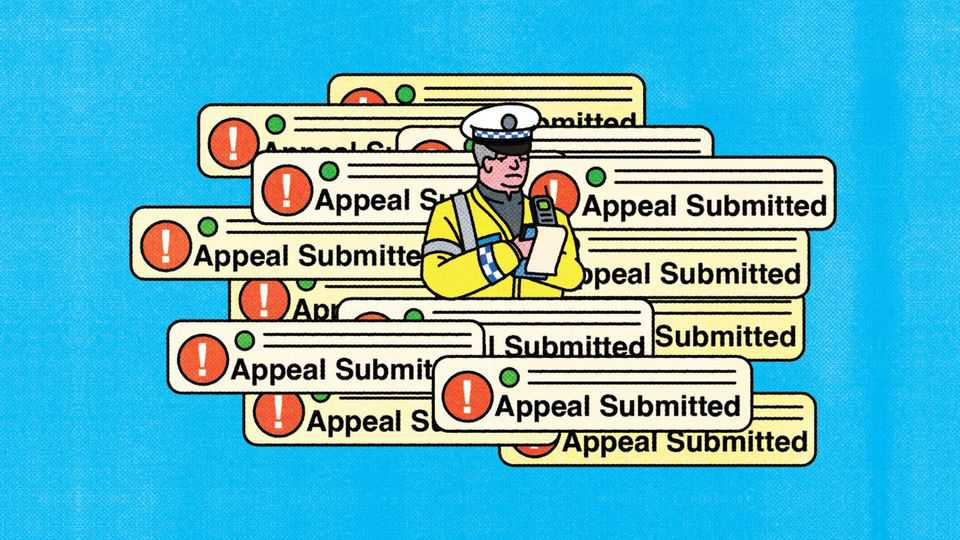

From parking tickets to planning, the state is under siege by AI
The people-versus-state arms race

Aug 6th 2026
THE POTENTIAl of AI to slash the cost of the state has left the British government giddy. Last year officials identified over 140 possible uses, from sifting diplomatic cables to culling call centres. Top civil servants were given a box of labour-saving tools, called “Humphrey”. Peter Kyle, then technology secretary, foresaw a “£45bn jackpot” in annual savings ($61bn, as much as 7% of public-sector spending).
In reality, the savings may be more modest—or perhaps wiped out entirely. That is not only because Whitehall may fail to live up to Mr Kyle’s heroic rhetoric. The bigger challenge is that the public are adopting AI rapidly too. They are using AI tools to handle their daily interactions with the state, and place growing demands on it. In effect, an AI arms race has begun between the state and citizens, and it is not clear that the state will win.
Take planning. Officials have developed tools to speed up housing approvals by giving an initial verdict on whether a plan is compliant with the law. Yet local authorities report a surge in AI-generated objections to proposed developments. They are often more effective: AI-aided submissions will cite planning codes and legal precedents chapter and verse. For £45, Objector AI, a platform, will scan a wodge of planning documents, draw up the legal grounds for opposition and write a speech to read out at a public meeting.
Or consider benefits. The Department for Work and Pensions uses AI to process claims and detect fraud. But claimants, too, are turning to AI chatbots to draft their demands, and maximise their prospects of success. It could get costly: Britons ask for less than they are entitled to in benefits, perhaps more than £20bn a year (0.7% of GDP), according to some estimates.
The impact is felt in humdrum corners of the state. AI is behind a growth in more complex freedom-of-information requests, says the Information Commissioner’s Office, a regulator. Platforms such as Pelp will draft letters appealing against parking fines. The new Renters’ Rights Act, which enables tenants to challenge rent hikes in court, is a prime target for AI. Complaints to state regulators about lawyers, financial advisers and estate agents are climbing, according to data compiled by Chris Schmitz, of the Hertie School in Berlin, who has coined the term “agentic flooding”. Britain may be particularly exposed to such inundation because government services often accept open-text submissions, which AI is good at drafting, he suggests.
But the trend is also found beyond Britain. In a forthcoming paper Mr Schmitz counts 93 examples across 11 countries. The EU Ombudsman, a complaints watchdog, the Canadian privacy regulator and Australia’s work tribunals all attribute a sharp rise in claims to AI. One Dutch municipality reported that objections to property-tax valuations increased by 400% after a commercial AI platform was launched to appeal against them.
Things will only accelerate with the adoption of AI agents that can execute tasks on a user’s behalf. They may, for example, check if a property is in the wrong tax band, and then set about fixing it, notes Tom Loosemore of Public Digital, a consultancy. AI agents are particularly well suited to navigating bureaucratic barbed wire. They are good at digesting small-print, adept at form-filling—and when it comes to a mind-numbing appeals process, they never give up the ghost. ■